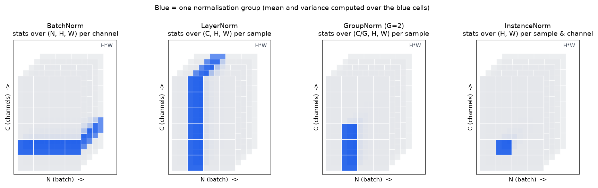

Normalization¶
Why this matters at staff level. BatchNorm's backward pass is the hardest derivation an interviewer can reasonably ask for in 20 minutes, because of the two "hidden" paths through \(\mu\) and \(\sigma^2\) that most candidates miss. Beyond the algebra, the questions that separate senior from staff are architectural: why every Transformer uses per-token LayerNorm/RMSNorm instead of BatchNorm, why BN breaks at batch size 2 in a detector and what SyncBN costs, why Llama dropped the mean subtraction, and why pre-LN replaced post-LN in every large model. All of it is about what the statistics depend on: the batch, the token, or nothing.
TL;DR: the interview card¶
- All four norms are the same computation on different axes: \(\hat x = (x - \mu)/\sqrt{\sigma^2 + \epsilon}\), \(y = \gamma\hat x + \beta\). BN: stats over the batch (per channel). LN: over the features (per sample/token). GN: over a group of channels (per sample). IN: over spatial only (per sample, per channel).
- Shared backward, with means over whatever axis the statistics came from: \(\boxed{\;dx = \frac{1}{\sqrt{\sigma^2+\epsilon}}\Big(d\hat x - \overline{d\hat x} - \hat x\,\overline{d\hat x\odot\hat x}\Big)\;}\) The three terms are the direct path, the path through \(\mu\), and the path through \(\sigma^2\).
- \(d\gamma = \sum d y \odot \hat x\), \(d\beta = \sum dy\), summed over every axis except the parameter axis.
- BN is the only one whose output for example \(n\) depends on the other examples. Train uses batch stats; eval uses running stats, a train/inference mismatch that is BN's whole failure surface.
- BN breaks with small batches (noisy \(\sigma^2\); ResNet-50 error jumps at batch 2), in RNNs (statistics per time step), and under distributed training (per-GPU stats \(\ne\) global stats → SyncBN, an extra all-reduce per BN per step).
- RMSNorm drops the mean: \(y = g\odot x/\sqrt{\overline{x^2}+\epsilon}\). One reduction instead of two, no \(\beta\); used by Llama, PaLM (as part of its norm choices) and T5-style models.
- Transformers normalise per token because sequences are variable-length and padded, generation is autoregressive (token \(t\) cannot depend on a batch), and inference batch sizes vary from 1 to thousands. Batch statistics would leak across examples and change with serving conditions.
- Pre-LN (\(x + f(\mathrm{LN}(x))\)) has a clean identity path and trains without warmup pathologies; post-LN (\(\mathrm{LN}(x + f(x))\)) has large gradients near the output at init and needs careful warmup.
1. Intuition first¶
A layer's job is easier when its inputs have a predictable scale. Consider a single hidden unit whose pre-activation over a batch of 4 examples is \(z = (102.1,\ 98.4,\ 101.7,\ 99.8)\). Two things are wrong: the values are far from zero (so a tanh saturates, a ReLU is always on, and the bias has to do the work of undoing the offset), and the variation that actually carries information is \(\pm1.5\) on top of a mean of \(100\), a relative signal of 1.5%. Normalising gives \(\hat z \approx (1.06,\ -1.33,\ 0.85,\ -0.58)\): zero mean, unit variance, and the informative variation is now the whole signal. The learnable \(\gamma, \beta\) let the network put back any scale and offset it actually wants, but it now chooses them rather than inheriting them from whatever the previous layer happened to produce.
The only question that remains is which set of numbers do you average over, and that choice is the entire taxonomy:

Each panel is a block of activations with the batch on one axis, channels on another, and spatial positions in depth. Blue = one normalisation group. BatchNorm pools over examples (blue spans the batch axis); LayerNorm pools over a single example's features; GroupNorm splits the channels into \(G\) groups and pools within one; InstanceNorm pools over spatial positions only. Only BatchNorm's blue region crosses the batch axis, that single fact causes every BatchNorm problem in §4.
A tiny worked example, batch of 3 with 2 features:
BatchNorm (down the columns): column 1 has \(\mu = 3, \sigma = \sqrt{8/3}\approx1.63\); column 2 has \(\mu = 20, \sigma\approx8.16\). Output \(\approx \begin{pmatrix}-1.22 & -1.22\\ 0 & 0\\ 1.22 & 1.22\end{pmatrix}\): the relative position within the batch is preserved, the scale of each feature is destroyed.
LayerNorm (across the rows): row 1 has \(\mu = 5.5, \sigma = 4.5\), giving \((-1, 1)\); every row gives \((-1, 1)\) because each row's two numbers are in the same order. LN has thrown away the magnitude within an example and kept the pattern, and notably each row's answer does not depend on the other rows at all.
That contrast is the chapter: BN couples examples, LN does not.
2. The math¶
2.1 The shared core and its backward¶
Let \(x \in \R^M\) be the \(M\) values that share a set of statistics (\(M = N\) for BN's per-channel group, \(M = D\) for LN's per-token group), and write
Parameter gradients. \(\gamma\) and \(\beta\) are shared across every position that uses them, so their gradients sum over those positions (the broadcast rule of chapter 2):
For BN over \((N, D)\) the sum is over \(n\) (giving shape \((D,)\)); for LN over \((\dots, D)\) it is over every leading axis; for BN2d over \((N, C, H, W)\) it is over \(n, h, w\).
Input gradient. Start from \(d\hat x_m = dy_m\,\gamma\). The subtlety is that \(x_m\) influences \(\hat x_m\) through three routes: directly, through \(\mu\) (which contains \(x_m\)), and through \(\sigma^2\) (which also contains \(x_m\)). Write it out.
using \((x_m-\mu)s = \hat x_m\) and \(s^3(x_m-\mu) = s^2\hat x_m\).
The second term vanishes because deviations from the mean sum to zero. Say that out loud in an interview: it is why the final formula has three terms and not four. Now collect the three routes into \(x_m\), using \(\partial\sigma^2/\partial x_m = 2(x_m-\mu)/M\) and \(\partial\mu/\partial x_m = 1/M\):
Substituting and factoring \(s\):
Read it as: scale by \(s\), then remove the component that would move the mean, then remove the component that would move the variance. The normalisation has made the layer's output invariant to shifts and rescalings of its input, so the gradient is projected onto the subspace orthogonal to those two directions, \(\sum_m dx_m = 0\) and \(\sum_m dx_m \hat x_m = 0\) exactly. A useful consequence: BN/LN make the loss invariant to the scale of the preceding weight matrix, and the gradient w.r.t. that matrix is inversely proportional to its norm, which is why normalised networks tolerate a much wider range of initialisations and learning rates (ch. 4).
2.2 BatchNorm: train, eval, and the running statistics¶
BatchNorm (Ioffe & Szegedy, 2015) applies the above with \(M = N\) per feature: for \((N, D)\) inputs, \(\mu, \sigma^2 \in \R^D\); for \((N, C, H, W)\), statistics are per channel over \(N\cdot H\cdot W\) values.
At inference you cannot use batch statistics: the prediction for one example must not depend on which other examples happen to be in the request. So BN keeps running estimates, updated each training step with momentum \(\rho\):
and at eval time computes \(y = \gamma(x - \mu^{\text{run}})/\sqrt{\sigma^{2,\text{run}}+\epsilon} + \beta\), which is a fixed affine map, it can be folded into the preceding convolution at deployment for free. Two implementation details that cost people days:
- Training normalises with the biased variance (\(1/N\)) but the running buffer accumulates the unbiased one (\(1/(N-1)\)). PyTorch does exactly this, and the NumPy implementation below matches it so the tests agree to \(10^{-10}\).
- In eval mode the statistics are constants, so the backward is just \(dx = \gamma\,dy/\sqrt{\sigma^{2,\text{run}}+\epsilon}\), no mean-removal terms. Getting this wrong makes fine-tuning with frozen BN subtly incorrect.
The original paper motivated BN by "internal covariate shift"; Santurkar et al. (2018) showed that BN's benefit is better explained by a smoother optimisation landscape (bounded gradient variation), not by distributional stability. Say this if asked why BN works, it signals you read past the abstract.
2.3 LayerNorm¶
LayerNorm (Ba, Kiros & Hinton, 2016) applies the core with \(M = D\) over the last axis, independently for each row:
Note the index: statistics carry \(n\), parameters carry \(d\), the exact transpose of BN. Because \(\mu_n\) and \(\sigma^2_n\) depend only on row \(n\), training and inference are the same computation, there are no buffers, batch size is irrelevant, and a batch of 1 works. The backward is the boxed formula with the means taken over the last axis.
2.4 RMSNorm: dropping the mean¶
Zhang & Sennrich (2019) hypothesised that LayerNorm's re-centering is dispensable and only the re-scaling matters:
No \(\mu\), no \(\beta\). The backward: with \(r = \sqrt{\overline{x^2}+\epsilon}\) and \(\hat x = x/r\), we have \(\partial r/\partial x_i = x_i/(rD)\), so
, the LayerNorm backward with the \(\overline{d\hat x}\) term deleted, mirroring the forward. What you gain: one reduction instead of two in both directions, no \(\beta\) parameters, and a simpler kernel; the paper reports 7–64% speedups on the models tested. What you lose: nothing measurable in practice for Transformers, which is why Llama adopted RMSNorm and T5's simplified norm is the same idea. One numerical detail every production implementation has: compute \(\overline{x^2}\) in fp32 even when \(x\) is bf16, because squaring in bf16 loses several bits and the norm is on the critical path of every layer.
2.5 GroupNorm and InstanceNorm¶
GroupNorm (Wu & He, 2018) splits \(C\) channels into \(G\) groups and normalises over \((C/G)\times H\times W\) values per sample per group. It interpolates: \(G = 1\) is LayerNorm over \((C,H,W)\); \(G = C\) is InstanceNorm (statistics over \(H\times W\) only, per sample per channel, originally from style transfer, where removing per-image contrast is the point). GN's selling argument is that it is batch-independent like LN but respects the channel structure of a convnet, where different channels detect genuinely different things and should not be pooled into one mean. Wu & He report that GN's accuracy is stable across batch sizes while BN's degrades sharply, with GN 10.6% lower error than BN for ResNet-50 at batch size 2 on ImageNet, the number to quote when asked "what do you use for detection or segmentation with 2 images per GPU?".
2.6 Why Transformers normalise per token, not per batch¶
This is the question to be rigorous about. Four independent reasons, any one of which is disqualifying for BN:
- Variable-length sequences and padding. A batch of sequences of lengths \((12, 400, 57)\) is padded to 400. BN's per-channel statistics would be computed over \(B \times T\) positions including pad tokens, so the normalisation of a real token would depend on how much padding its neighbours needed. You can mask the statistics, but then \(\mu\) and \(\sigma^2\) depend on the batch's length distribution, the same sentence normalises differently depending on what it was batched with.
- Batch-statistics dependence is a correctness bug at inference. BN makes example \(n\)'s output a function of the other examples in the batch. In training that is a (usually benign) regulariser; in serving it means the answer to a user's prompt depends on who else's prompt was batched with it, non-deterministic, un-reproducible, and a genuine information-leakage surface. LN's output for a token depends only on that token's own \(d_{model}\) values.
- Train/inference mismatch, amplified. BN patches (2) with running statistics, but then the function computed at training time differs from the one at inference. For an LM the input distribution shifts with sequence position, domain and prompt style, so a single global \((\mu^{\text{run}}, \sigma^{2,\text{run}})\) per channel is a poor fit, and any drift shows up as a silent quality regression. LN and RMSNorm have no train/inference gap by construction.
- Autoregressive generation. At decode time you process one token at a time, often with batch size 1 and with KV-cached prefixes. Per-token statistics are computable from the single token's own activations; batch statistics over a batch of one are degenerate (\(\sigma^2 = 0\)). Worse, during training with causal masking, BN's statistics would pool over positions \(>t\), leaking future information into token \(t\)'s normalisation, a subtle but real causality violation.
Reason 4 also explains why the same argument applies to RNNs, which is precisely the motivation in the LayerNorm paper: BN in an RNN needs separate statistics per time step and cannot handle sequences longer than those seen in training.
2.7 Pre-LN vs post-LN¶
The original Transformer placed the norm after the residual add: \(x_{\ell+1} = \mathrm{LN}(x_\ell + f(x_\ell))\) (post-LN). Modern large models place it before the branch: \(x_{\ell+1} = x_\ell + f(\mathrm{LN}(x_\ell))\) (pre-LN). Xiong et al. (2020) showed with a mean-field analysis that at initialisation post-LN has expected gradients near the output layer that are large (growing with depth), which is why post-LN training needs a carefully tuned learning-rate warmup, whereas pre-LN's gradients are well-behaved and warmup can be reduced or removed. The mechanism is the identity path: in pre-LN there is a clean, un-normalised residual highway from input to output (so the backward has an identity term at every layer, as in ch. 2 §6), while post-LN puts a normalisation, whose Jacobian removes two directions and rescales by \(1/\sigma\), in the middle of that highway. The cost of pre-LN is the residual-stream growth of ch. 4 §2.5, handled by the \(1/\sqrt{2L}\) init and a final LN before the head. Full architectural discussion in Part V.
3. Implementation¶
src/mlbook/nn/normalization.py (NumPy, forward + hand-written backward) and
src/mlbook/nn/normalization_torch.py (nn.Module versions). The shared backward
is one function, which is the best evidence that the four norms really are one
computation on different axes:
def _norm_backward(dxhat, xhat, inv_std, axis):
"""Shared backward for xhat = (x - mu) * inv_std with stats over `axis`."""
m1 = dxhat.mean(axis=axis, keepdims=True) # mean of dxhat (path through mu)
m2 = (dxhat * xhat).mean(axis=axis, keepdims=True) # mean of dxhat*xhat (path through sigma^2)
return inv_std * (dxhat - m1 - xhat * m2) # input shape
Three lines, exactly the boxed formula of §2.1. axis=0 gives BatchNorm, axis=-1
gives LayerNorm, axis=-1 on a reshaped \((N, G, M)\) view gives GroupNorm.
class BatchNorm1d:
def forward(self, x):
if self.training:
mu = x.mean(axis=0) # (D,)
var = x.var(axis=0) # (D,) biased, as in the paper
n = x.shape[0]
self.running_mean = (1 - self.momentum) * self.running_mean + self.momentum * mu
# PyTorch stores the *unbiased* variance in running_var:
self.running_var = (1 - self.momentum) * self.running_var + self.momentum * var * n / max(n - 1, 1)
else:
mu, var = self.running_mean, self.running_var # (D,), (D,)
inv_std = 1.0 / np.sqrt(var + self.eps) # (D,)
xhat = (x - mu) * inv_std # (N, D)
self._cache = (xhat, inv_std)
return self.gamma * xhat + self.beta # (N, D)
def backward(self, dout):
xhat, inv_std = self._cache # (N, D), (D,)
self.dgamma = (dout * xhat).sum(axis=0) # (D,)
self.dbeta = dout.sum(axis=0) # (D,)
dxhat = dout * self.gamma # (N, D)
if not self.training:
return dxhat * inv_std # eval: mu, var are constants
return _norm_backward(dxhat, xhat, inv_std, axis=0) # (N, D)
Note what is cached: \(\hat x\) and \(s\), not \(x\) and \(\mu\), the backward formula is
written entirely in terms of the normalised values, which is both cheaper and what
every fused kernel does. The if not self.training branch is the eval-mode backward
of §2.2; forgetting it is a real bug in frozen-BN fine-tuning.
class BatchNorm2d:
"""Statistics per channel over N*H*W: move C last and flatten."""
def forward(self, x):
n, c, h, w = x.shape
flat = x.transpose(0, 2, 3, 1).reshape(n * h * w, c) # (N*H*W, C)
out = self.bn.forward(flat) # (N*H*W, C)
return out.reshape(n, h, w, c).transpose(0, 3, 1, 2) # (N, C, H, W)
BN2d is BN1d on a reshaped view, "per-channel batch statistics" means pooling \(N\cdot H\cdot W\) values per channel. The backward is the mirrored reshape (the transpose rule of ch. 2 §2.6).
class LayerNorm:
def forward(self, x):
mu = x.mean(axis=-1, keepdims=True) # (..., 1)
var = x.var(axis=-1, keepdims=True) # (..., 1)
inv_std = 1.0 / np.sqrt(var + self.eps) # (..., 1)
xhat = (x - mu) * inv_std # (..., D)
self._cache = (xhat, inv_std)
return self.gamma * xhat + self.beta # (..., D)
def backward(self, dout):
xhat, inv_std = self._cache # (..., D), (..., 1)
lead = tuple(range(dout.ndim - 1)) # every axis except the last
self.dgamma = (dout * xhat).sum(axis=lead) # (D,)
self.dbeta = dout.sum(axis=lead) # (D,)
dxhat = dout * self.gamma # (..., D)
return _norm_backward(dxhat, xhat, inv_std, axis=-1) # (..., D)
The only differences from BN: axis=-1 for the statistics, axis=lead for the
parameter sums, and no buffers or training flag at all.
class RMSNorm:
def forward(self, x):
inv_rms = 1.0 / np.sqrt((x ** 2).mean(axis=-1, keepdims=True) + self.eps) # (..., 1)
xhat = x * inv_rms # (..., D)
self._cache = (xhat, inv_rms)
return self.g * xhat # (..., D)
def backward(self, dout):
xhat, inv_rms = self._cache # (..., D), (..., 1)
lead = tuple(range(dout.ndim - 1))
self.dg = (dout * xhat).sum(axis=lead) # (D,)
dxhat = dout * self.g # (..., D)
m2 = (dxhat * xhat).mean(axis=-1, keepdims=True) # (..., 1)
return inv_rms * (dxhat - xhat * m2) # (..., D) no mean term
Side by side with LayerNorm.backward, the deleted - m1 is the whole difference.
class RMSNorm(nn.Module): # normalization_torch.py
def forward(self, x: Tensor) -> Tensor:
xf = x.float() # (..., D) in fp32
inv_rms = torch.rsqrt(xf.pow(2).mean(dim=-1, keepdim=True) + self.eps) # (..., 1)
return self.g * (xf * inv_rms).to(x.dtype) # (..., D)
The .float() / .to(x.dtype) sandwich is the production detail from §2.4: the
reduction runs in fp32 even for bf16 activations.
How you'd test it. Against torch.nn.functional, in float64, forward and
backward: build the same input, run F.batch_norm / F.layer_norm / F.rms_norm /
F.group_norm with requires_grad=True, backprop a random cotangent, and compare
out, dx, dgamma, dbeta to atol=1e-10. Additionally, run BN for three steps
against torch.nn.BatchNorm1d and compare the running buffers, then switch both to
eval and compare outputs. That last step is what catches the biased/unbiased variance
detail.
tests/test_nn_normalization.py does all of this.
Full implementation: src/mlbook/nn/normalization.py
"""BatchNorm, LayerNorm, RMSNorm and GroupNorm in NumPy, forward *and* backward
(Part III, chapter 5).
All four share one algebraic core: normalise a vector ``x`` of length ``M`` to
``xhat = (x - mu) / sqrt(var + eps)`` and the backward is
dx = (1 / sqrt(var + eps)) * ( dxhat - mean(dxhat) - xhat * mean(dxhat * xhat) )
with the means taken over the same ``M`` elements the statistics came from.
What differs is *which axis* ``M`` runs over: the batch (BN), the feature
vector (LN), a group of channels x spatial (GN).
"""
from __future__ import annotations
import numpy as np
def _norm_backward(dxhat: np.ndarray, xhat: np.ndarray, inv_std: np.ndarray, axis: int | tuple[int, ...]) -> np.ndarray:
"""Shared backward for ``xhat = (x - mu) * inv_std`` with stats over ``axis``.
``dxhat``, ``xhat`` have the input shape; ``inv_std`` broadcasts against them.
"""
m1 = dxhat.mean(axis=axis, keepdims=True) # mean of dxhat over the stat axis
m2 = (dxhat * xhat).mean(axis=axis, keepdims=True) # mean of dxhat*xhat
return inv_std * (dxhat - m1 - xhat * m2) # input shape
class BatchNorm1d:
"""BatchNorm over the batch axis of ``(N, D)`` inputs.
Train: ``mu = mean_n x``, ``var = mean_n (x - mu)^2`` (biased, over the batch),
``y = gamma * xhat + beta``; running stats updated with ``momentum``.
Eval: use the running stats -> a fixed per-feature affine map.
Backward returns ``dx`` ``(N, D)`` and stores ``dgamma``, ``dbeta`` ``(D,)``.
"""
def __init__(self, d: int, eps: float = 1e-5, momentum: float = 0.1) -> None:
self.gamma = np.ones(d) # (D,)
self.beta = np.zeros(d) # (D,)
self.dgamma = np.zeros(d) # (D,)
self.dbeta = np.zeros(d) # (D,)
self.running_mean = np.zeros(d) # (D,)
self.running_var = np.ones(d) # (D,)
self.eps, self.momentum = eps, momentum
self.training = True
self._cache: tuple[np.ndarray, np.ndarray] | None = None
def forward(self, x: np.ndarray) -> np.ndarray:
if self.training:
mu = x.mean(axis=0) # (D,)
var = x.var(axis=0) # (D,) biased estimator, as in the paper
n = x.shape[0]
self.running_mean = (1 - self.momentum) * self.running_mean + self.momentum * mu
# PyTorch stores the *unbiased* variance in running_var.
self.running_var = (1 - self.momentum) * self.running_var + self.momentum * var * n / max(n - 1, 1)
else:
mu, var = self.running_mean, self.running_var # (D,), (D,)
inv_std = 1.0 / np.sqrt(var + self.eps) # (D,)
xhat = (x - mu) * inv_std # (N, D)
self._cache = (xhat, inv_std)
return self.gamma * xhat + self.beta # (N, D)
def backward(self, dout: np.ndarray) -> np.ndarray:
assert self._cache is not None
xhat, inv_std = self._cache # (N, D), (D,)
self.dgamma = (dout * xhat).sum(axis=0) # (D,)
self.dbeta = dout.sum(axis=0) # (D,)
dxhat = dout * self.gamma # (N, D)
if not self.training:
return dxhat * inv_std # eval: mu, var are constants
return _norm_backward(dxhat, xhat, inv_std, axis=0) # (N, D)
class BatchNorm2d:
"""BatchNorm for ``(N, C, H, W)``: statistics per channel over ``N*H*W``.
Implemented by moving ``C`` last and flattening to ``(N*H*W, C)``, which is
exactly what "per-channel batch statistics" means.
"""
def __init__(self, c: int, eps: float = 1e-5, momentum: float = 0.1) -> None:
self.bn = BatchNorm1d(c, eps=eps, momentum=momentum)
@property
def training(self) -> bool:
return self.bn.training
@training.setter
def training(self, value: bool) -> None:
self.bn.training = value
def forward(self, x: np.ndarray) -> np.ndarray:
n, c, h, w = x.shape
flat = x.transpose(0, 2, 3, 1).reshape(n * h * w, c) # (N*H*W, C)
out = self.bn.forward(flat) # (N*H*W, C)
return out.reshape(n, h, w, c).transpose(0, 3, 1, 2) # (N, C, H, W)
def backward(self, dout: np.ndarray) -> np.ndarray:
n, c, h, w = dout.shape
flat = dout.transpose(0, 2, 3, 1).reshape(n * h * w, c) # (N*H*W, C)
dx = self.bn.backward(flat) # (N*H*W, C)
return dx.reshape(n, h, w, c).transpose(0, 3, 1, 2) # (N, C, H, W)
class LayerNorm:
"""LayerNorm over the last axis of ``(..., D)``: one ``mu``/``var`` per row.
Identical computation at train and eval time - no batch dependence.
Backward returns ``dx`` with the input shape; ``dgamma``, ``dbeta`` are ``(D,)``.
"""
def __init__(self, d: int, eps: float = 1e-5) -> None:
self.gamma = np.ones(d) # (D,)
self.beta = np.zeros(d) # (D,)
self.dgamma = np.zeros(d) # (D,)
self.dbeta = np.zeros(d) # (D,)
self.eps = eps
self._cache: tuple[np.ndarray, np.ndarray] | None = None
def forward(self, x: np.ndarray) -> np.ndarray:
mu = x.mean(axis=-1, keepdims=True) # (..., 1)
var = x.var(axis=-1, keepdims=True) # (..., 1)
inv_std = 1.0 / np.sqrt(var + self.eps) # (..., 1)
xhat = (x - mu) * inv_std # (..., D)
self._cache = (xhat, inv_std)
return self.gamma * xhat + self.beta # (..., D)
def backward(self, dout: np.ndarray) -> np.ndarray:
assert self._cache is not None
xhat, inv_std = self._cache # (..., D), (..., 1)
lead = tuple(range(dout.ndim - 1)) # all axes except the last
self.dgamma = (dout * xhat).sum(axis=lead) # (D,)
self.dbeta = dout.sum(axis=lead) # (D,)
dxhat = dout * self.gamma # (..., D)
return _norm_backward(dxhat, xhat, inv_std, axis=-1) # (..., D)
class RMSNorm:
"""RMSNorm (Zhang & Sennrich, 2019): ``y = g * x / sqrt(mean(x^2) + eps)``.
No mean subtraction and no bias: one fewer reduction than LayerNorm and no
re-centering. Backward: ``dx = (1/r) * (dxhat - xhat * mean(dxhat * xhat))``.
"""
def __init__(self, d: int, eps: float = 1e-6) -> None:
self.g = np.ones(d) # (D,)
self.dg = np.zeros(d) # (D,)
self.eps = eps
self._cache: tuple[np.ndarray, np.ndarray] | None = None
def forward(self, x: np.ndarray) -> np.ndarray:
inv_rms = 1.0 / np.sqrt((x ** 2).mean(axis=-1, keepdims=True) + self.eps) # (..., 1)
xhat = x * inv_rms # (..., D)
self._cache = (xhat, inv_rms)
return self.g * xhat # (..., D)
def backward(self, dout: np.ndarray) -> np.ndarray:
assert self._cache is not None
xhat, inv_rms = self._cache # (..., D), (..., 1)
lead = tuple(range(dout.ndim - 1))
self.dg = (dout * xhat).sum(axis=lead) # (D,)
dxhat = dout * self.g # (..., D)
m2 = (dxhat * xhat).mean(axis=-1, keepdims=True) # (..., 1)
return inv_rms * (dxhat - xhat * m2) # (..., D)
class GroupNorm:
"""GroupNorm (Wu & He, 2018) for ``(N, C, H, W)``: stats over ``(C/G, H, W)`` per group.
``G = 1`` is LayerNorm over ``(C, H, W)``; ``G = C`` is InstanceNorm.
``gamma``, ``beta`` are per channel ``(C,)``.
"""
def __init__(self, num_groups: int, c: int, eps: float = 1e-5) -> None:
assert c % num_groups == 0
self.groups = num_groups
self.gamma = np.ones(c) # (C,)
self.beta = np.zeros(c) # (C,)
self.dgamma = np.zeros(c) # (C,)
self.dbeta = np.zeros(c) # (C,)
self.eps = eps
self._cache: tuple[np.ndarray, np.ndarray, tuple[int, ...]] | None = None
def forward(self, x: np.ndarray) -> np.ndarray:
n, c, h, w = x.shape
xg = x.reshape(n, self.groups, (c // self.groups) * h * w) # (N, G, M)
mu = xg.mean(axis=-1, keepdims=True) # (N, G, 1)
var = xg.var(axis=-1, keepdims=True) # (N, G, 1)
inv_std = 1.0 / np.sqrt(var + self.eps) # (N, G, 1)
xhat = ((xg - mu) * inv_std).reshape(n, c, h, w) # (N, C, H, W)
self._cache = (xhat, inv_std, x.shape)
return self.gamma[None, :, None, None] * xhat + self.beta[None, :, None, None] # (N, C, H, W)
def backward(self, dout: np.ndarray) -> np.ndarray:
assert self._cache is not None
xhat, inv_std, (n, c, h, w) = self._cache
self.dgamma = (dout * xhat).sum(axis=(0, 2, 3)) # (C,)
self.dbeta = dout.sum(axis=(0, 2, 3)) # (C,)
dxhat = (dout * self.gamma[None, :, None, None]).reshape(n, self.groups, -1) # (N, G, M)
xhat_g = xhat.reshape(n, self.groups, -1) # (N, G, M)
dx = _norm_backward(dxhat, xhat_g, inv_std, axis=-1) # (N, G, M)
return dx.reshape(n, c, h, w) # (N, C, H, W)
Full implementation: src/mlbook/nn/normalization_torch.py
"""``nn.Module`` versions of BatchNorm1d, LayerNorm and RMSNorm (Part III, chapter 5).
Written from the equations, not by subclassing the torch classes, so you can
see every buffer and every reduction. Autograd supplies the backward; the
NumPy module ``mlbook.nn.normalization`` shows it by hand.
"""
from __future__ import annotations
import torch
from torch import Tensor, nn
class BatchNorm1d(nn.Module):
"""``y = gamma * (x - mu_B) / sqrt(var_B + eps) + beta`` over the batch axis of ``(N, D)``.
Buffers ``running_mean``/``running_var`` (unbiased var, matching PyTorch)
are updated in training and *used* in eval.
"""
def __init__(self, d: int, eps: float = 1e-5, momentum: float = 0.1) -> None:
super().__init__()
self.gamma = nn.Parameter(torch.ones(d)) # (D,)
self.beta = nn.Parameter(torch.zeros(d)) # (D,)
self.register_buffer("running_mean", torch.zeros(d)) # (D,)
self.register_buffer("running_var", torch.ones(d)) # (D,)
self.eps, self.momentum = eps, momentum
def forward(self, x: Tensor) -> Tensor:
if self.training:
mu = x.mean(dim=0) # (D,)
var = x.var(dim=0, unbiased=False) # (D,)
with torch.no_grad():
n = x.shape[0]
self.running_mean.mul_(1 - self.momentum).add_(self.momentum * mu)
self.running_var.mul_(1 - self.momentum).add_(self.momentum * var * n / max(n - 1, 1))
else:
mu, var = self.running_mean, self.running_var # (D,), (D,)
xhat = (x - mu) / torch.sqrt(var + self.eps) # (N, D)
return self.gamma * xhat + self.beta # (N, D)
class LayerNorm(nn.Module):
"""``y = gamma * (x - mu) / sqrt(var + eps) + beta`` with stats over the last axis of ``(..., D)``."""
def __init__(self, d: int, eps: float = 1e-5) -> None:
super().__init__()
self.gamma = nn.Parameter(torch.ones(d)) # (D,)
self.beta = nn.Parameter(torch.zeros(d)) # (D,)
self.eps = eps
def forward(self, x: Tensor) -> Tensor:
mu = x.mean(dim=-1, keepdim=True) # (..., 1)
var = x.var(dim=-1, keepdim=True, unbiased=False) # (..., 1)
xhat = (x - mu) / torch.sqrt(var + self.eps) # (..., D)
return self.gamma * xhat + self.beta # (..., D)
class RMSNorm(nn.Module):
"""``y = g * x / sqrt(mean(x^2) + eps)`` over the last axis - the Llama / T5 norm.
The RMS is computed in float32 even for bf16 inputs (as Llama does), then
cast back, because ``mean(x^2)`` in bf16 loses several bits.
"""
def __init__(self, d: int, eps: float = 1e-6) -> None:
super().__init__()
self.g = nn.Parameter(torch.ones(d)) # (D,)
self.eps = eps
def forward(self, x: Tensor) -> Tensor:
xf = x.float() # (..., D) in fp32
inv_rms = torch.rsqrt(xf.pow(2).mean(dim=-1, keepdim=True) + self.eps) # (..., 1)
return self.g * (xf * inv_rms).to(x.dtype) # (..., D)
Retype by hand¶
| Symbol | File | Target time | Test |
|---|---|---|---|
_norm_backward (derive the three terms as you type) |
src/mlbook/nn/normalization.py |
5 min | exercised by every test below |
BatchNorm1d forward + backward + running stats |
src/mlbook/nn/normalization.py |
12 min | pytest tests/test_nn_normalization.py -k "batchnorm1d or running_stats" -q |
LayerNorm forward + backward |
src/mlbook/nn/normalization.py |
6 min | pytest tests/test_nn_normalization.py -k layernorm -q |
RMSNorm forward + backward |
src/mlbook/nn/normalization.py |
5 min | pytest tests/test_nn_normalization.py -k rmsnorm -q |
normalization_torch.RMSNorm (with the fp32 reduction) |
src/mlbook/nn/normalization_torch.py |
4 min | pytest tests/test_nn_normalization.py -k torch_modules -q |
Fine to just read: BatchNorm2d (know that it is BN1d on a reshaped view),
GroupNorm (know the reshape to \((N, G, M)\)), normalization_torch.BatchNorm1d.
Full drill: BatchNorm forward and full backward from the definition, then LayerNorm
and RMSNorm, verified against torch.nn.functional: 30 minutes. Grader:
pytest tests/test_nn_normalization.py -q. Whiteboard drill: derive the BN backward
including both hidden paths in 10 minutes, without notes.
4. Systems view: cost, failure modes, trade-offs¶
Cost. All norms are memory-bandwidth-bound, not FLOP-bound: \(O(M)\) arithmetic over \(O(M)\) bytes, with two passes (statistics, then normalise) unless you use Welford or a fused kernel. In a Transformer, LN/RMSNorm are a few percent of FLOPs but can be 10%+ of time if unfused, which is why every serious stack fuses norm + residual + the next projection's prologue. RMSNorm's single reduction is a real saving here, not just an elegance. Backward needs \(\hat x\) and \(s\) cached per norm, \(O(BTd)\) activation memory per layer, a recompute candidate under checkpointing. At deployment, an eval-mode BN is a fixed affine map and folds into the preceding conv for free; LN/RMSNorm cannot be folded because their statistics are data-dependent.
BatchNorm's three failure modes.
- Small batches. \(\hat\sigma^2\) over \(N\) samples has relative standard error \(\approx\sqrt{2/(N-1)}\): at \(N=32\) that is 25%, at \(N=2\) it is 140%. The normalisation becomes noise, and worse, the train/eval gap grows because running statistics average noisy estimates. Wu & He measured ResNet-50 ImageNet error rising sharply below batch 8, with GN 10.6% better at batch 2. This is the default situation in detection and segmentation, where 2 high-resolution images per GPU is normal.
- Sequences/RNNs. Statistics would have to be per time step; unseen lengths have no statistics; padding pollutes them. This is the motivation for LayerNorm.
- Distributed training. With data parallelism each rank computes BN statistics over
its local batch, so a 256-GPU run at 8 images/GPU is really BN with \(N=8\), not
\(N=2048\). Sometimes that is fine (it is what "Accurate, Large Minibatch SGD" relies
on, they explicitly compute BN statistics per-worker and note the per-worker size
is what defines the loss). Sometimes it is not, and you need SyncBN: an
all-reduce of \((\sum x, \sum x^2, \text{count})\) per BN layer per step, plus a second
all-reduce in backward. PyTorch's
SyncBatchNormrequires DDP with one GPU per process and is applied viaconvert_sync_batchnorm. The cost is real, two extra collectives per BN layer, on the critical path, which is why detectors use it (accuracy matters more) and large classifiers often do not.
Other traps. BN in a Siamese/contrastive network leaks information between the
two views through the shared statistics. BN with gradient accumulation does not
emulate a larger batch, statistics are still per microbatch. Frozen BN during
fine-tuning must also freeze the statistics (module.eval()), not just the
parameters; requires_grad=False alone still updates the running buffers. Batch
Renormalization (Ioffe, 2017) exists precisely to reduce the minibatch dependence by
correcting towards the running statistics during training.
When to use what.
| Situation | Choice | Rule |
|---|---|---|
| ConvNet classifier, batch \(\ge 32\) per device | BatchNorm | Best accuracy and it folds away at inference. |
| Detection/segmentation, 1–8 images per device | GroupNorm (G=32) or SyncBN | GN if you cannot afford the collectives; SyncBN if you can and want BN's accuracy. |
| Any Transformer | LayerNorm or RMSNorm, pre-LN | Per-token stats; no train/inference gap; works at batch 1. |
| LLM where the norm is on the critical path | RMSNorm | One reduction, no \(\beta\); used by Llama. |
| RNN | LayerNorm | Per-time-step BN statistics do not generalise across lengths. |
| Style transfer / per-image contrast removal | InstanceNorm | Removing per-image statistics is the objective, not a side effect. |
| Very deep residual net without any norm | Fixup-style init + careful LR | Possible (ch. 4) but you give up BN's regularisation. |
5. In production¶
Google: BatchNorm in Inception (2015): 14× fewer steps
Ioffe and Szegedy introduced BN to address what they called internal covariate shift, normalising each layer's inputs per minibatch as part of the architecture. On a state-of-the-art image classification model they reported reaching the same accuracy with 14× fewer training steps, enabling much higher learning rates and less careful initialisation, and noting that BN acts as a regulariser that in some cases removed the need for dropout. Source: arXiv:1502.03167. The "why it works" explanation was later revised: Santurkar et al. attribute the gain to a smoother optimisation landscape rather than distributional stability, arXiv:1805.11604.
Facebook AI: BatchNorm details in 1-hour ImageNet training (2017)
Accurate, Large Minibatch SGD trains ResNet-50 with a minibatch of 8192 across 256 GPUs in one hour with no accuracy loss. Two of the paper's contributions are BN-specific: (a) the linear scaling rule plus a 5-epoch gradual warmup to survive the early-training instability of large batches; (b) the observation that with data parallelism BN's statistics are computed per worker, so the per-worker batch size defines the loss function being optimised, and the total batch size must be interpreted accordingly. They also zero-initialise the last BN's \(\gamma\) in each residual block (ch. 4). Source: arXiv:1706.02677.
Megvii: Cross-GPU BatchNorm for detection (MegDet, 2017)
Detection trains with very few images per GPU, so per-worker BN statistics are
computed over a handful of samples. MegDet introduced Cross-GPU Batch
Normalization (SyncBN) together with a learning-rate policy to train detectors at
minibatch 256 across up to 128 GPUs, cutting training from 33 hours to 4 hours
while improving accuracy; the resulting system won 1st place in the COCO 2017
detection challenge. The trade they accepted: extra collectives per BN layer in
exchange for statistics computed over the global batch. Source:
arXiv:1711.07240. PyTorch's equivalent is
torch.nn.SyncBatchNorm.
FAIR: GroupNorm when the batch is 2 (2018)
Wu and He observed that BN's error increases rapidly as batch size shrinks, which limits detection, segmentation and video models. GroupNorm computes statistics within channel groups per sample, making it batch-independent: they report GN's accuracy is stable across a wide range of batch sizes and that with 2 samples per batch GN has 10.6% lower error than BN for ResNet-50 on ImageNet. This is why Detectron-family models default to GN or SyncBN. Source: arXiv:1803.08494.
Meta: Llama's pre-normalisation with RMSNorm
Llama normalises the input of each Transformer sub-layer rather than the output (pre-normalisation) to improve training stability, and uses the RMSNorm function of Zhang & Sennrich. The same choice carries into Llama 2 and Llama 3. The trade: a slightly different function class (no re-centering, no \(\beta\)) in exchange for a cheaper kernel on the critical path of every layer and no train/inference statistics to manage. Sources: arXiv:2302.13971, arXiv:2307.09288, arXiv:2407.21783; RMSNorm: arXiv:1910.07467; T5's simplified layer norm: arXiv:1910.10683.
EleutherAI and Google: pre-LN at 20B and 540B parameters
GPT-NeoX-20B and PaLM (540B, trained on 6144 TPU v4 chips) are both pre-LN Transformers; the pre-LN placement is the standard choice at scale because of the gradient behaviour Xiong et al. analysed, which lets these runs use much shorter warmups than post-LN would require. Sources: arXiv:2204.06745, arXiv:2204.02311, arXiv:2002.04745. Original post-LN Transformer: arXiv:1706.03762.
6. Interview questions and strong answers¶
Derive BatchNorm's backward pass.
Cache \(\hat x\) and \(s = (\sigma^2+\epsilon)^{-1/2}\). Parameters first: \(d\gamma = \sum_n dy\odot\hat x\), \(d\beta = \sum_n dy\), and \(d\hat x = dy\,\gamma\). Now \(x_n\) reaches \(\hat x\) three ways. Through \(\sigma^2\): \(\partial L/\partial\sigma^2 = -\tfrac12 s^2\sum_n d\hat x_n\hat x_n\). Through \(\mu\): \(\partial L/\partial\mu = -s\sum_n d\hat x_n\), the term that would come via \(\sigma^2\) vanishes because \(\sum_n(x_n - \mu) = 0\). Then \(dx_n = s\,d\hat x_n + \frac{\partial L}{\partial\sigma^2}\frac{2(x_n-\mu)}{N} + \frac{\partial L}{\partial\mu}\frac1N\), which collects to \(dx = s(d\hat x - \overline{d\hat x} - \hat x\,\overline{d\hat x \hat x})\). Sanity checks: \(\sum_n dx_n = 0\) and \(\sum_n dx_n\hat x_n = 0\), the gradient is orthogonal to the shift and scale directions the normalisation made irrelevant. Staff follow-up: what is the backward in eval mode? \(dx = \gamma\,dy\,s\) with \(s\) from the running variance, the statistics are constants, so the two extra terms disappear.
Why don't Transformers use BatchNorm? Give me more than 'sequences are variable length'.
Four reasons. (1) Padding and variable length: per-channel statistics over \(B\times T\) positions make a token's normalisation depend on the batch's length distribution. (2) Correctness at serving: BN makes one user's output depend on the other requests batched with it, non-deterministic and a leakage surface. (3) Train/inference mismatch: running statistics are a single global estimate per channel, but an LM's activation distribution shifts with position, domain and prompt, so the estimate is systematically wrong and drifts. (4) Autoregressive decoding runs at batch 1 with KV caches, where batch statistics are degenerate; and during causally-masked training, batch statistics pooled over positions would leak future tokens into the normalisation of earlier ones. LayerNorm/RMSNorm compute per-token statistics from the token's own \(d_{model}\) values, so all four problems vanish and training and inference are the same function. Staff follow-up: is there any batch-dependence left in a Transformer? Only through the optimiser (gradients are batch means) and through any batch-level loss; the forward function per example is batch-independent.
RMSNorm drops the mean subtraction. What does that change, and why is it safe?
Forward: one reduction instead of two, no \(\beta\) parameter, and the output is no longer guaranteed zero-mean. Backward: the \(-\overline{d\hat x}\) term disappears, so \(dx = \frac1r(d\hat x - \hat x\,\overline{d\hat x\hat x})\), the gradient is orthogonal to \(\hat x\) (scale-invariance preserved) but not to the constant direction. It is safe because the property Transformers rely on is re-scaling invariance, keeping the activation magnitude bounded on the residual stream, not re-centering; Zhang & Sennrich made exactly this hypothesis and validated it empirically, and Llama's adoption at scale is the production evidence. Staff follow-up: any numerical caveat? Compute \(\overline{x^2}\) in fp32 even for bf16 activations; squaring bf16 values loses precision, and since RMSNorm sits in front of every sub-layer, that error compounds across depth.
Your detector trains at 2 images per GPU across 64 GPUs and validation accuracy is much worse than training. BatchNorm is in the backbone. Diagnose.
Each rank's BN sees \(N=2\), so the batch statistics are extremely noisy (relative
error on \(\sigma^2\) of order 140%) and the running statistics that eval uses are an
average of noisy estimates, a large train/eval gap is the expected symptom. Three
fixes, in order of how much I would trust them: (1) switch the backbone to
GroupNorm (batch-independent, and Wu & He's headline case is exactly batch 2);
(2) use SyncBN so the statistics come from the global batch of 128, costs two
extra all-reduces per BN layer per step, which MegDet showed is worth it for
detection; (3) if the backbone is pretrained and I am fine-tuning, freeze BN
entirely (.eval() on the BN modules, so both parameters and buffers are frozen)
and rely on the pretrained statistics. Before any of that I would rule out a
missing model.eval() in the validation loop, which produces the same symptom.
Pre-LN vs post-LN: which would you choose for a new 70B model, and why?
Pre-LN. Xiong et al. showed that post-LN's expected gradients near the output are large at initialisation, which is why the original Transformer recipe needed a carefully tuned warmup; pre-LN keeps a clean identity path through the residual stream so the backward has an identity term at every block and gradients are well-behaved, allowing shorter warmup and larger learning rates. Every large open model I would benchmark against (GPT-NeoX-20B, PaLM, Llama) is pre-LN. The costs I would plan for: the residual stream's variance grows like \(2L\), so I would use the GPT-2 \(1/\sqrt{2L}\) init on the residual-writing projections and a final LN before the LM head. Staff follow-up: is post-LN ever better? It has a slight quality edge in some small-scale MT results, and hybrid schemes exist; at 70B the stability argument dominates.
How much does normalisation cost, and how would you make it faster?
It is bandwidth-bound: \(O(M)\) arithmetic over \(O(M)\) bytes, with two passes over the data (statistics, then normalise) plus the same in backward. In a Transformer the FLOPs are negligible but the time can be 10%+ if the kernel is unfused, because every element is read and written multiple times. Speedups: fuse the norm with the residual add and the next projection so activations stay in registers/SRAM; use RMSNorm to halve the reductions; keep the reduction in fp32 but the data in bf16; and recompute the norm in backward instead of caching \(\hat x\) if memory is tighter than bandwidth. Staff follow-up: what about inference? An eval-mode BatchNorm is a constant affine map and folds into the preceding convolution at export time, free. LN/RMSNorm are data-dependent and cannot be folded, so they remain a per-token cost in serving.
7. Exercises¶
★ Shapes. For each norm, give the shapes of \(\mu\), \(\sigma^2\), \(\gamma\) and the number of values each statistic is computed over, for an input of shape \((N, C, H, W) = (32, 64, 8, 8)\) and \(G = 8\) groups.
Solution
BN: \(\mu, \sigma^2 \in \R^{64}\), each over \(32\cdot8\cdot8 = 2048\) values; \(\gamma \in \R^{64}\). LN (over \(C,H,W\)): \(\mu,\sigma^2 \in \R^{32}\) (one per sample), each over \(64\cdot8\cdot8 = 4096\); \(\gamma \in \R^{64\cdot8\cdot8}\) or \(\R^{64}\) depending on the convention. GN: \(\mu,\sigma^2 \in \R^{32\times8}\), each over \((64/8)\cdot8\cdot8 = 512\); \(\gamma \in \R^{64}\). IN: \(\mu,\sigma^2 \in \R^{32\times64}\), each over \(64\) values; \(\gamma \in \R^{64}\).
★ Two orthogonality identities. Show directly from the boxed backward that \(\sum_m dx_m = 0\) and \(\sum_m dx_m\hat x_m = 0\), and explain what they mean.
Solution
\(\sum_m dx_m = s(\sum_m d\hat x_m - M\overline{d\hat x} - \overline{d\hat x\hat x}\sum_m \hat x_m)\). The first two cancel by definition of the mean, and \(\sum_m\hat x_m = 0\) because \(\hat x\) is centred. For the second: \(\sum_m dx_m\hat x_m = s(\sum d\hat x\hat x - \overline{d\hat x}\sum\hat x - \overline{d\hat x\hat x}\sum\hat x^2)\); \(\sum\hat x = 0\) and \(\sum\hat x^2 = M\) (unit variance, ignoring \(\epsilon\)), leaving \(s(M\overline{d\hat x\hat x} - M\overline{d\hat x\hat x}) = 0\). Meaning: the layer's output is invariant to shifting or rescaling its input, so the gradient has no component in those two directions, moving the previous layer's weights along them changes nothing.
★★ Small-batch variance noise (coding). Empirically measure the relative standard error of the biased variance estimator as a function of \(N\) for Gaussian data, and compare with \(\sqrt{2/(N-1)}\). Which \(N\) gives 10% error?
Solution
import numpy as np
rng = np.random.default_rng(0)
for n in [2, 4, 8, 16, 32, 64, 256]:
v = rng.normal(size=(20000, n)).var(axis=1) # (20000,) biased estimates of 1.0
print(n, round(v.std() / v.mean(), 3), round(np.sqrt(2 / (n - 1)), 3))
★★ LayerNorm backward by hand (coding). Without using mlbook, implement
layernorm_backward(dout, xhat, inv_std, gamma) and verify against
torch.autograd on a \((3, 7, 5)\) input.
Solution
import numpy as np, torch, torch.nn.functional as F
def layernorm_backward(dout, xhat, inv_std, gamma):
dxhat = dout * gamma # (..., D)
m1 = dxhat.mean(-1, keepdims=True) # (..., 1)
m2 = (dxhat * xhat).mean(-1, keepdims=True) # (..., 1)
return inv_std * (dxhat - m1 - xhat * m2) # (..., D)
x = np.random.randn(3, 7, 5); g = np.random.randn(5); b = np.random.randn(5)
r = np.random.randn(3, 7, 5)
mu, var = x.mean(-1, keepdims=True), x.var(-1, keepdims=True)
inv = 1 / np.sqrt(var + 1e-5); xhat = (x - mu) * inv
xt = torch.tensor(x, requires_grad=True)
(F.layer_norm(xt, (5,), torch.tensor(g), torch.tensor(b)) * torch.tensor(r)).sum().backward()
np.testing.assert_allclose(layernorm_backward(r, xhat, inv, g), xt.grad.numpy(), atol=1e-10)
★★★ BN's implicit regularisation. BN's training-time output for example \(n\) depends on the other examples in the batch, which injects noise. Quantify it: for a single feature with true mean 0 and variance 1, and a batch of \(N\) samples, derive the approximate variance of \(\hat x_n\) around the value it would take with the true statistics, and argue how this scales with \(N\). What does that predict about BN's regularisation strength as batch size grows, and what should you change to compensate?
Solution sketch
\(\hat x_n = (x_n - \hat\mu)/\hat\sigma\) with \(\hat\mu \sim \mathcal N(0, 1/N)\) and \(\hat\sigma^2\) fluctuating with relative standard deviation \(\approx\sqrt{2/N}\). To first order, \(\hat x_n \approx (x_n - \hat\mu)(1 - \tfrac12\delta)\) with \(\delta = \hat\sigma^2 - 1\), so the perturbation relative to the true-statistics value has variance \(\approx 1/N + \tfrac12 x_n^2\cdot(2/N)\cdot\tfrac14 = O(1/N)\). So the injected noise scales as \(1/\sqrt N\) in standard deviation: BN regularises less as the batch grows. This predicts that large-batch training needs more explicit regularisation (weight decay, augmentation, dropout, label smoothing, chapter 6) to match small-batch generalisation, which is consistent with the heavy augmentation recipes used in large-batch ImageNet training. It also warns against treating batch size as a pure systems knob: it is a regularisation hyperparameter too.
References¶
- Ioffe, S., Szegedy, C. (2015). Batch Normalization: Accelerating Deep Network Training by Reducing Internal Covariate Shift. arXiv:1502.03167
- Ba, J. L., Kiros, J. R., Hinton, G. E. (2016). Layer Normalization. arXiv:1607.06450
- Zhang, B., Sennrich, R. (2019). Root Mean Square Layer Normalization. arXiv:1910.07467
- Wu, Y., He, K. (2018). Group Normalization. arXiv:1803.08494
- Santurkar, S., Tsipras, D., Ilyas, A., Madry, A. (2018). How Does Batch Normalization Help Optimization? arXiv:1805.11604
- Ioffe, S. (2017). Batch Renormalization. arXiv:1702.03275
- Goyal, P. et al. (2017). Accurate, Large Minibatch SGD: Training ImageNet in 1 Hour. arXiv:1706.02677
- Peng, C. et al. (2017). MegDet: A Large Mini-Batch Object Detector. arXiv:1711.07240
- Xiong, R. et al. (2020). On Layer Normalization in the Transformer Architecture. arXiv:2002.04745
- Vaswani, A. et al. (2017). Attention Is All You Need. arXiv:1706.03762
- Touvron, H. et al. (2023). LLaMA. arXiv:2302.13971 · Llama 2. arXiv:2307.09288 · Grattafiori, A. et al. (2024). The Llama 3 Herd of Models. arXiv:2407.21783
- Raffel, C. et al. (2020). Exploring the Limits of Transfer Learning with a Unified Text-to-Text Transformer (T5). arXiv:1910.10683
- Black, S. et al. (2022). GPT-NeoX-20B. arXiv:2204.06745 · Chowdhery, A. et al. (2022). PaLM. arXiv:2204.02311
- PyTorch. torch.nn.SyncBatchNorm. docs.pytorch.org